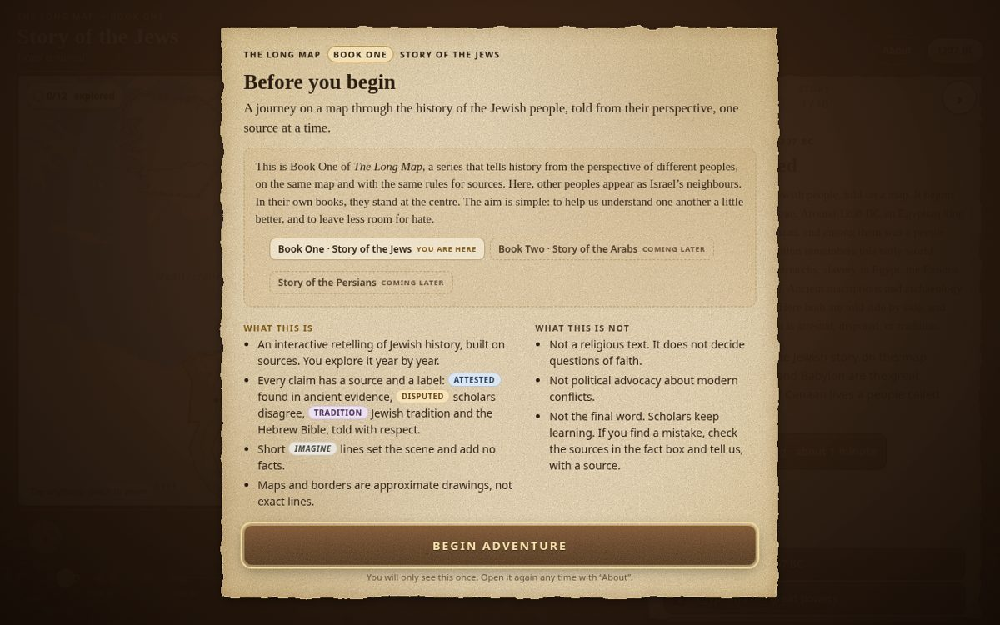

The Long Map
En interaktiv, berättad historiekarta. Första boken, Story of the Jews, har filmläge, professionell berättarröst och ljudeffekter – och varje påstående har en källa. Målet är att öka förståelsen och minska hatet. An interactive, narrated history map. The first book, Story of the Jews, has a film mode, professional narration and sound effects – and every claim has a source. Its mission is to increase understanding and reduce hate.
- Filmläge / Film mode
- ElevenLabs
- KällorSources
- GitHub Pages